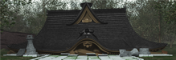

- Welcome to Touhou Wiki!
- Please register to edit. For assistance, check in with our Discord server or IRC channel.
File:Th105HakureiShrineCollapsedSmall.png
Jump to navigation
Jump to search

{kind=link}
No higher resolution available.
Th105HakureiShrineCollapsedSmall.png (219 × 75 pixels, file size: 36 KB, MIME type: image/png)
The Hakurei Shrine collapsed, as seen in Scarlet Weather Rhapsody and Touhou Hisoutensoku.
File history
Click on a date/time to view the file as it appeared at that time.
| Date/Time | Thumbnail | Dimensions | User | Comment | |
|---|---|---|---|---|---|
| current | 20:05, 24 October 2011 | 219 × 75 (36 KB) | Tony64 (talk | contribs) | Category:Scarlet Weather Rhapsody Screenshots |
- You cannot overwrite this file.
File usage
More than 100 pages use this file. The following list shows the first 100 pages that use this file only. A full list is available.
- Anareta
- Ancient Story
- Aunn Komano
- Banshiryuu
- Banshiryuu/Story/Hirano's C74 Extra
- Banshiryuu/Story/Hirano's Scenario (C74 version, Easy and Normal modes)
- Banshiryuu/Story/Hirano's Scenario (V3, Easy and Normal modes)
- Banshiryuu/Story/VIVIT-r's C74 Extra
- Banshiryuu/Story/VIVIT-r's Scenario (C74 version, Easy and Normal modes)
- Big Four of the Mountain
- Bound in Blood
- C22
- C23
- Cloudy with a Chance of Cucumbers
- Disaster
- Dragon (God)
- Evergrace
- Everlasting (CielArc)
- Experience -Act.3
- Fan-made characters/Hakurei Miko
- Fan-made characters/Meimu
- Farewell To Her Memories
- Gatekeeper
- Gengetsu
- Genso Wanderer
- Hakurei God
- Iemitsu.
- Impossible Spell Card/Gameplay/Strategy
- Iwanagahime
- Kakashi Spirit News
- Kioh Gyoku/Story/Prologue
- Light Night Beat
- Literal World
- MNK
- Masterpieces For Our Struggle
- Masterpieces For Our Struggle 2
- Moon Rocket
- Mystery Cat
- Mystical World
- Nemuno Sakata
- Nikenme Radio
- Ordinary strange
- Phantasmagoria of Dim.Dream/Translation/Other
- Project Blank
- RebRank
- RefRain
- Release Timeline
- SMD-00x
- Sanae Invaders
- Sanae Kochiya
- Shunsatsu sare do?
- Shuusou Gyoku/Gameplay
- Skyruin ep
- Sylphid
- Ten Desires special and two-part interview with ZUN
- Tenjou no Tempest
- The Psalm of Dreamers
- The night crawlers
- Torte Le Magic
- Touhou Project acoustic arranged instruments
- Touhou Project acoustic arranged instruments2
- Touhou Project acoustic arranged instruments3
- Touhou Project pops arranged instruments
- Touhou Project pops arranged instruments2
- Touhou Project pops arranged instruments3
- Touhou Project pops arranged instruments4
- Touhou Project pops arranged instruments5
- Touhou Project pops arranged instruments6
- Touhou Project pops arranged instruments7
- Touhou Soujiki/Music
- UNION
- UNWORDS e.p
- Unstable e.p.
- Welcome to my hell
- White Names Spoiled Past/Gameplay
- Works.thE
- こたつとみかん
- とうほうインスパイア
- カラフルノート
- ピアノのための東方夜想曲集「Ju-roku-zakura」
- 号外だよー
- 夜虹の入江
- 天空のフロンティア
- 幻想のエリシオン
- 彷徨いの冥
- 恋綴里
- 恋綴里-第八話•下-
- 月臥丘書寮
- 東方四重奏５
- 東方四重奏６
- 東方幻奏箱
- 東方鋼鉄録 ～ the memory of steeler ～
- 東方鋼鉄魔
- 秋葉文化祭コンピレーションCD Vol.2
- 舞風
- 迷い家へようこそ
- 電子弦奏V -a forbidden carnival-
- 風鈴ぼるけいの
- File:089.jpg
- Template:DS Spell Card Strategy
{kind=link}
{kind=link}
{kind=link}
{kind=link}
{kind=link}
{kind=link}
{kind=link}
{kind=link}